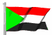

The Country & People of Sudan
This page contains links to sites in Sudan and Sudan related sites.
For Middle East, North Africa, Arab and regional information visit Arab Countries
History
Northeast Sudan, called Nubia in ancient times, was colonized by Egypt about 2000 BC and was ruled by the Cush kingdom from the 8th cent. BC to the 4th cent AD Most of Nubia was converted to Coptic Christianity in the 6th cent., but by the 15th cent. Islam prevailed.
In 1821 the north was conquered by Egypt, but a revolt by the nationalist Mahdi in 1881 forced an Egyptian withdrawal.
In the 1890s an Anglo-Egyptian force under Herbert Kitchener destroyed the theocratic Mahdist state, and in 1899 most of Sudan came under the joint rule of Egypt and Britain (with Britain exercising actual control).
Independence was achieved in 1956. In 1955 the animist southerners, fearing that the new nation would be dominated by the Muslim north, began a civil war that lasted 17 years.
In 1972 Pres. Muhammad Gaafar al-Nimeiry ended the war by granting the south a measure of autonomy. However, his imposition of Islamic law on the entire country in 1983 reopened the conflict, and close to 2 million have died since, many from starvation.
Nimeiry was deposed by a military coup in 1986. A short-lived civilian government was overthrown in 1989 by Lt. Gen. Omar Hassan al-Bashir; he officially became president in 1993 and was elected to the post in 1996. Bashir's government reinstituted Islamic law, banned opposition parties, and jailed dissidents.
Throughout the 1990s the army mounted offensives against the rebels in S Sudan; several cease-fires were announced to allow the distribution of food to famine victims, but they did not hold. In recent years Sudan has supported Muslim fundamentalists internationally.
In 1998 U.S. missiles destroyed a pharmaceutical plant in Khartoum that was suspected of manufacturing chemical weapon compounds to be used in terrorist activities, but international investigators were unable to find evidence to support the charges.
In late 1999 a power struggle developed between Bashir and the speaker of the parliament, Hassan al-Turabi. Bashir dissolved parliament and in 2000 also secured his control of the ruling National Congress party.
In Dec. 2000 he was reelected president, and his party swept the parlimentary elections; the opposition boycotted the vote. Turabi was put under house arrest in Feb. 2001 after signing an agreement with the rebels calling for peaceful resistance to Bashir's government.
The government and rebels agreed in July 2002 to a framework for peace that called for autonomy for the south and a referendum on independence after six years, and a truce was signed in October. Despite some cease-fire violations, talks continued in 2003. The Darfur rebels subsequently agreed to form alliance with the Beja rebels in NE Sudan (around Kasala) if they were not included in any settlement with the government; the Beja group had expected to be part of the negotiations with the southern rebels. Militias allied with the government in Darfur (and the government itself) were accused of ethnic cleansing, and perhaps as many as 800,000 Sudanese were displaced by the fighting, with many of them fleeing to Chad.
A new cease-fire was signed in Apr., 2004, but it too did not hold. Also in April, Turabi and members of his party were again arrested by the government, which accused them of plotting against it; in September the government asserted that a new coup plot involving the jailed Turabi had been uncovered. There was increasing pressure in mid-2004 from the United Nations, United States, and European Union on Sudan to end the attacks in Darfur, and in July, 2004, Bashir’s government promised the United Nations that it would disarm the militias. A lack of significant progress in ending the fighting and disarming the militias led to UN Security Council resolutions against Sudan in July and September. The latter resolution called for an investigation into whether the attacks were genocide, as U.S. Secretary of State Colin Powell had charged. By October it was estimated that 1.5 million had been displaced by the conflict in Darfur. Meanwhile, there were attacks against Sudanese in the south by the Lord’s Resistance Army (LRA), a Ugandan rebel group, leading both southern Sudanese rebels and government-allied militias to mount a drive against the LRA.
Additional protocols relating to peace with the SPLA were signed in early in Jan., 2005, and shortly thereafter a final peace agreement was sealed. The deal called for Islamic law to be restricted to the north, for the south to be autonomous and hold a vote on independence in 2011, and for central government power and southern oil revenues to be shared. In July, 2005, SPLA leader John Garang became Sudan’s vice president, and the state of emergency in force since 1999 was lifted (except in Darfur and two provinces in E Sudan). Garang was killed in a helicopter crash in late July, sparking several days of riots in Khartoum. Salva Kiir was chosen to succeed Garang as head of SPLA and as vice president, and subsequently thousands of refugees from the south began returning there. Sudan’s power-sharing government was finalized in September, and a government for autonomous S Sudan was established in Juba in Oct., 2005. Since then, however, there has been fighting in S Sudan between the SPLA and other rebels who have refused to be integrated into the SPLA, and between other Sudanese forces and the SPLA.
Attempts to invigorate the much violated AU-monitored peace accord in Darfur progressed slowly in 2006. The African Union failed to win an agreement on a new cease-fire for Darfur, and Sudan objected to replacing the AU monitors with UN peacekeepers. A failed drive by Chadian rebels that reached Ndjamena, Chad’s capital, in Apr., 2006, led to a break in diplomatic relations with Chad, which accused Sudan of supporting the rebels. An Aug., 2006, UN Security Council resolution establishing a UN peacekeeping force for Darfur was rejected by Sudan, and the AU agreed in September to extend its forces’ mandate until the end of 2006. In Oct., 2006, Chad again accused Sudan of backing a Chadian rebel incursion, and said Sudan’s air force had bombed several E Chadian towns.
In early 2007 there was fighting between Chadian and Sudanese forces after Chad’s military pursued rebels into Sudanese territory. In March, the International Criminal Court accused Ahmed Haroun, a member of the Sudanese government who was responsible for Darfur in 2003–4, of war crimes; the ICC said it had evidence that the Sudanese government had orchestrated militia attacks. The following month, after pressure from China, Sudan agreed to allow some 3,000 UN peacekeepers to join the AU force.In the second half of 2007 the conflict in Darfur degenerated as a peace conference scheduled to begin in October approached. Some of the Arab militias battled among themselves, a rebel force attacked AU peacekeepers, and government and militia forces attacked the rebel faction that had signed a peace agreement in 2006. A cease-fire was declared by the government at the beginning of the peace conference, but several major factions boycotted the conference, and two rebel groups that did not attend reported that they had been attacked. The conference did resolve the conflict, and fighting continued continued in Darfur through 2008. Also in Oct., 2007, the southern Sudanese withdrew from the national government, accusing it of not honoring the peace accord; after negotiations, the south rejoined the government in December, and by Jan., 2008, all government forces finally were withdrawn from the south.
In July, 2008, the International Criminal Court (ICC) prosecutor accused President Bashir of war crimes in connection with the conflict in Darfur; the ICC issued a warrant for Bashir's arrest for war crimes and other charges in Mar., 2009. (The ICC has investigated leaders on both sides in the conflict with respect to possible war crimes.) Sudan ordered international aid agencies to leave Darfur and other parts of the country in retaliation. Some 300,000 are estimated to have died (directly or indirectly) as a result of the Darfur conflict; some 2.7 million have been displaced.
The census that began in Apr., 2009, was denounced by Kiir after it showed southern Sudanese to make up just over a fifth of the population; the S Sudan government believed the true proportion to be at least a third, and accused Khartoum of deliberately miscounting. In July a Sudanese opposition party and a Darfur rebel group jointly denounced the current power-sharing government as illegitimate and called for a new transitional government to be formed because the accord that created the current government called for new elections by mid-2009. An agreement resolving most remaining disputes concerning the S Sudan peace agreement was signed by both sides in August, but the two thorniest issues, the census and the law governing S Sudan's referendum on independence, were not included. In September fighting broke out in N Darfur as government forces moved to oust the rebels there, and it continued intermittently, at times worsening, into and during 2010. Increased ethnic fighting in the south, along with the unresolved issues, raised north-south tensions as 2009 ended.
One of the main Darfur rebel groups signed a truce with the government in Feb., 2010. The agreement also established a framework for further negotiations toward a final peace treaty, but the rebels later withdrew from the talks. Other significant rebel groups were not party to that agreement, but Sudan began talks with another Darfur group in May. The presidential and other elections were finally held in Apr., 2010, but logistical problems, irregularities in both north and south, and, in the north, boycotts by many opposition parties resulted in serious flaws and guaranteed that there would be no significant political changes. Bashir was reelected president with more than two thirds of the vote, while Kiir was reelected as S Sudan's leader with more than 90% of the vote, and subsequently the SPLM again participated in Sudan's coalition government. Tensions between the central government and S Sudan increased, however, in subsequent months as the scheduled Jan., 2011, independence referendum neared. The voting was nonetheless largely peaceful and credible, though there were clashes in Abyei, which was not taking part. More than 98% voted in favor of independence. The months after the vote were marked by ongoing unrest in Abyei and the rise of anti-SPLM militias in parts of S Sudan, particularly in non-Dinka, minority areas. In Feb., 2011, the NCP majority in parliament amended the constitution to immediately exclude representatives of the 10 S Sudanese states, a move that was protested by S Sudan. In July, the south became independent as South Sudan, but the question of Abyei remained unresolved. A full-scale conflict erupted there in May, as the Sudanese government seized control of the area; thousands fled south, and UN peacekeeping forces were deployed in Abyei in July. There also was significant fighting in Southern Kurdufan and, later, Blue Nile states in the south as government forces attempted to crush non-Arab forces, the Sudan People's Liberation Army–North (SPLA-N), who had been allied with the southern rebels; government forces were again accused of ethnic cleansing. In November, the SPLA-N joined with Darfur rebel groups to form the Sudan Revolutionary Front. A dispute over oil transit fees charged by Sudan led South Sudan to halt oil production in early 2012. In March and April there were significant border clashes between the two nations, which led to an AU-UN ultimatum that called for an end to the fighting and an agreement on border issues. Both nations have been accused of arming each other's rebels.
Loss of oil revenue in Sudan led in June, 2012, to austerity measures that sparked antigovernment protests. An agreement on the resumption of oil shipments (but not border issues) was signed with South Sudan in Sept., 2012, and negotiations continued into 2013 on issues relating to the border and rebels, delaying the resumption of shipments, but in Apr., 2013, South Sudan resumed oil production. In Nov., 2012, the government accused the country's intelligence chief of plotting a coup.
In Feb., 2013, the Justice and Equality Movement (JEM), one of the main Darfur rebel groups, signed a cease-fire agreement and committed itself to negotiations with Sudan; it was the second Darfur rebel group to do so. Subsequently, however, there has been resurgent fighting involving groups on both sides. In Apr., 2015, Bashir was reelected president in a landslide. The main opposition parties boycotted the vote, and the turnout was said to be lower than the 46% reported by the government.
General Info
Cities, towns, municipalities, places, flag, maps, useful Information....
Business
Economy, reports, statistics, banks, directories, jobs, investment, promotion....
Culture
General resources, heritage, art, literature, photography, cinema, music, song, dance, cultural, scientific,
environmental, sporting entities & info....
Education
Schools, colleges, academies, universities, polytechnics, institutions, research, resources, projects....
History
Ancient & modern history, human rights, politics & political parties, related sites, articles....
Media
Newspapers, magazines, news, newsletters, news agencies, radio, TV, internet, articles, reports, cartoons....
Organizations
Government, ministries, overseas missions, embassies, corporations, organizations, industrial entities, centers,
public hospitals, institutions, societies, foreign entities....
Travel
Airlines, air, sea & coach charters services, travel, tours, guides, hotels, resorts, inns, hostels, health,
travel tips, weather....
Gateways
Gateways, search engines and directories to country related sites and information....
Arab Countries
Arab World: Middle East, North Africa, Arab and regional information. Resources to other Arab countries....
Cities, Towns, Municipalities & Places
Flag, Maps, Useful Information....
Banks
Directories, Job Opportunities
Investment & Promotion....
Art, Literature, Photography, Cinema....
Music, Song & Dance....
Cultural, Scientific, Environmental, Sporting Entities & Info
Institutions & Organizations
Research, Resources & Projects
Human Rights, Politics & Political Parties....
Related Sites, Articles....
OnLine News, Newsletters, News Agencies....
Radio, TV, Internet....
Articles, Reports, Cartoons....
Corporations, Organizations, Public Hospitals and Industrial Entities
Centers, Institutions, Societies....
Foreign Entities
Travel, Tours, Guides.... More country info
Hotels, Resorts, Inns, Hostels....
Health & Travel Tips
Weather....
For comments, reports of deadlinks and adding your URL